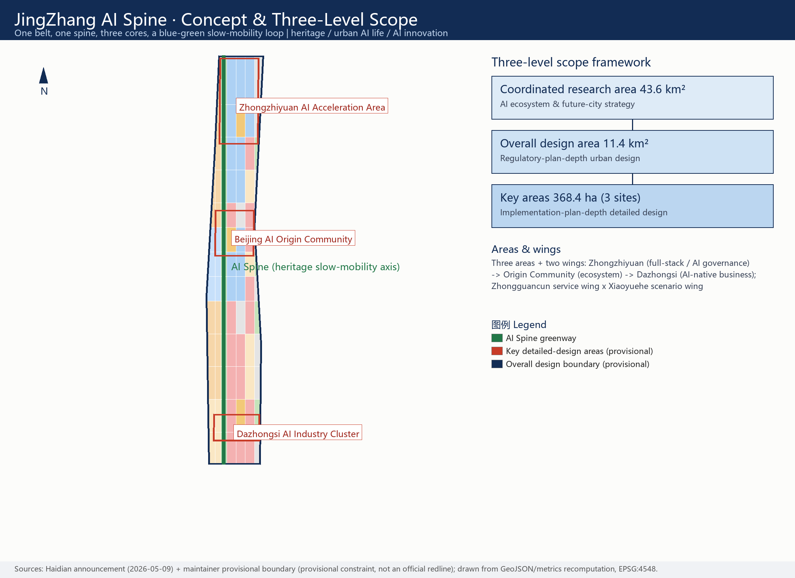
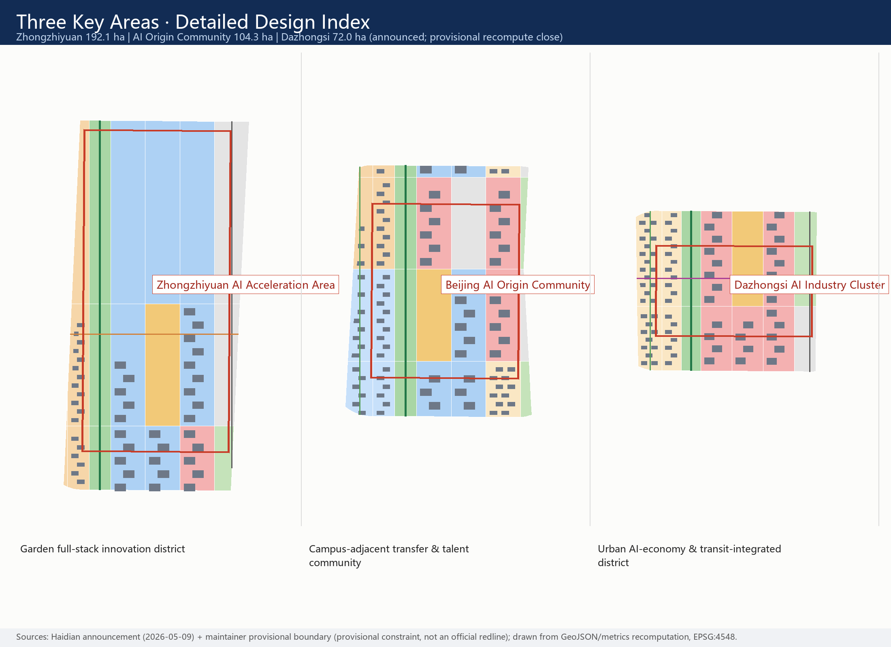
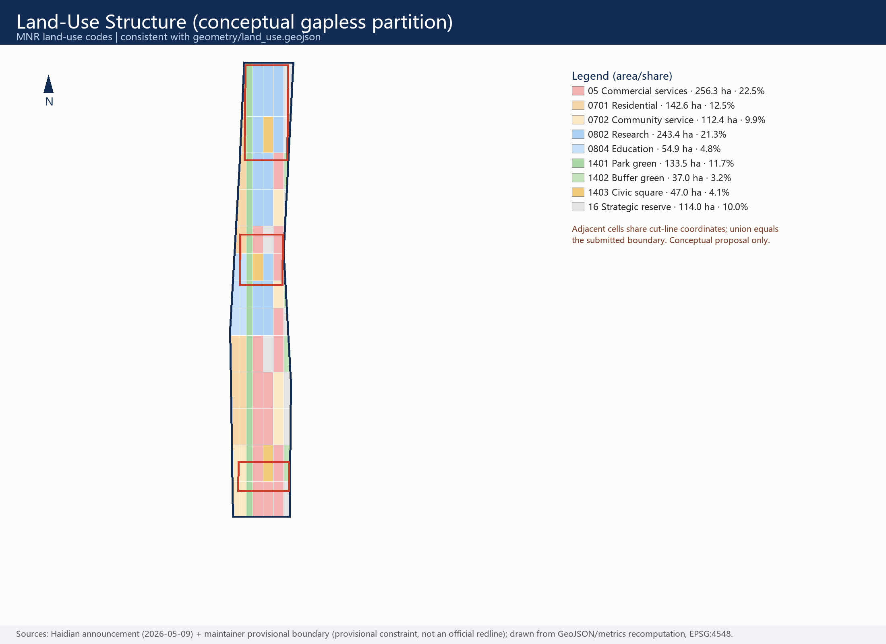
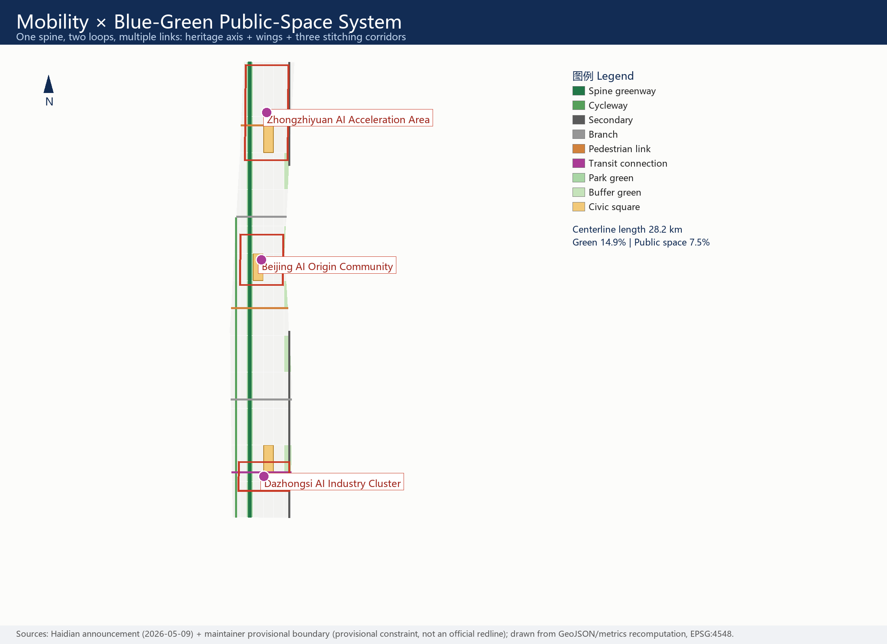
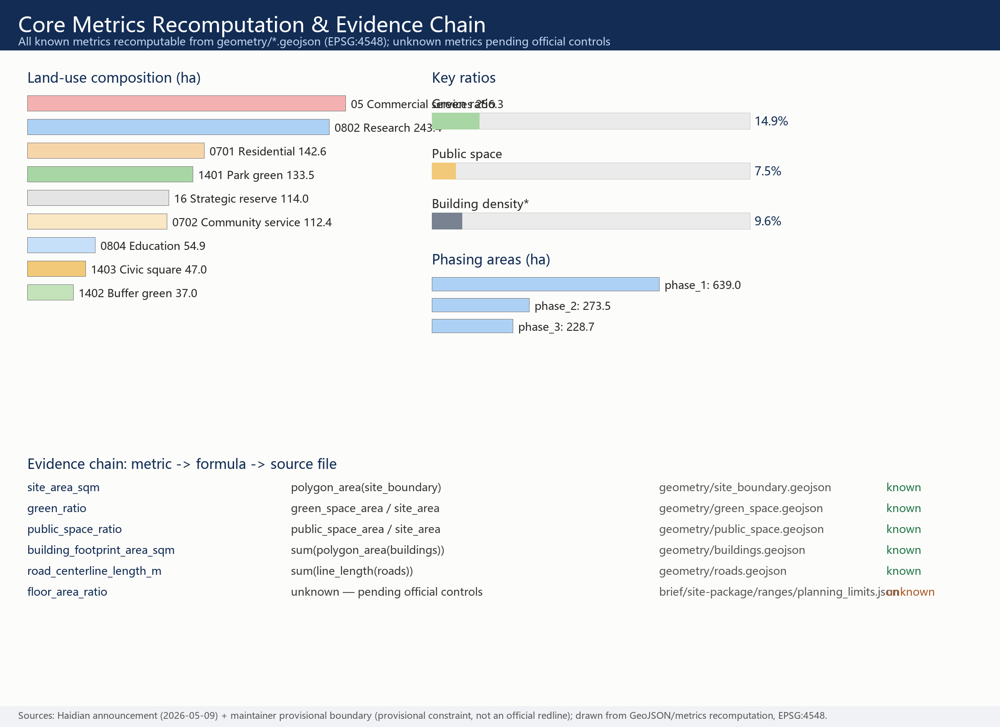

JingZhang AI Spine: An AI Innovation Community on a Century-old Rail Corridor
A concept proposal that turns the century-old Jing-Zhang rail corridor into an AI innovation community: one spine, three cores, two wings and multiple nodes — with a naming and visual-identity system, 8 global AI ecosystem cases, 12 AI scenario cards, 3 industry test-validation scenarios, 6 user personas, 3 AI pilgrimage landmarks, a fused cultural narrative and a long-term operation mechanism. Spatial content is mapped on the maintainer's provisional boundary (provisional constraint); all metrics are recomputable in EPSG:4548; statutory control indicators are pending official data.
JingZhang AI Spine: An AI Innovation Community on a Century-old Rail Corridor
Primary name: 京张智脊 (JingZhang AI Spine)
One-sentence concept: turn the urban corridor left by the first railway independently built by Chinese engineers in 1909 into the first "AI Spine" co-built by agents and humans from 2026 onward — heritage as the root, open source as the pulse, scenarios as the leaves, and operation as the fruit.
Design Basis and Source Inventory
This proposal takes the prequalification announcement issued by the Haidian Branch of the Beijing Municipal Commission of Planning and Natural Resources as its primary basis 来源 标准, and fully responds to the agent open-call taskbook: ten co-creation principles, three positionings, five functions, three areas plus two wings, and six agent tasks 来源 标准. Machine-readable inputs come from the site package 来源; source-use boundaries follow the public source registry 来源.
Source-use statement: only public or cleared materials are used; data/processed/agent_fact_pack.md serves only as a reading-navigation layer, not a new authority 来源. Background-only and provisional-only materials are never promoted into statutory evidence; every area figure is recomputed from this package's GeoJSON in EPSG:4548, never copied from narrative text.
Honest boundary statement (affects the whole document): when this package was generated, no official precise boundary or key-area polygons had been published by the organizer. The proposal therefore uses the maintainer's provisional rough boundary 空间数据 空间数据. It is a provisional constraint — not an official redline, approval basis, or precise-area basis; the organizer's data gap does not block content scoring. Once official geometry is published, land use, roads, green space, public space, buildings, phasing and all metrics will be recomputed as a whole, not patched piecemeal.

Three-Level Scope Framework
The work follows the three scope levels defined by the announcement 标准 深度:
| Level | Size | Core question answered | Evidence anchor |
|---|---|---|---|
| Coordinated research area | 43.6 km² | How the AI ecosystem and future-city form are organized | Innovation-chain framework, case studies, mechanism proposals |
| Overall design area | 11.4 km² | How renewal structure, land use, mobility, blue-green and character are mapped | 空间数据 指标 |
| Key detailed-design areas | 368.4 ha (3 sites) | How the three sites reach detailed-design depth | 空间数据 深度 |
The three levels are not three isolated drawings: research decides the industry-chain and urban-form judgments; the overall design translates them into a gapless land-use partition, slow-mobility network, blue-green system and phasing; key-area design verifies implementability of functions, buildings, traffic, public space and AI scenarios. All levels share one spatial skeleton — one spine, three cores, two wings, multiple nodes 深度:
- One spine: the JingZhang AI Spine — a heritage slow-mobility axis (greenway) along the old rail corridor, running north-south through the whole design area 空间数据;
- Three cores: Zhongzhiyuan AI Acceleration Area (full-stack autonomy / AI governance), Beijing AI Origin Community (innovation ecosystem), Dazhongsi AI Industry Cluster (AI-native business);
- Two wings: the Zhongguancun technology-service wing (global factor allocation, IP and capital empowerment) and the Xiaoyuehe scenario-empowerment wing (scenarios and vibrant city), as a conceptual synergy loop that draws no new redlines;
- Multiple nodes: operable nodes corresponding to the 12 AI scenario cards, distributed along the spine, cores and corridors.
Planning-innovation idea (for professional deepening): use the "scenario unit" as the space-industry fusion interface of comprehensive planning — each scenario card binds a spatial carrier, an operating body and a governance boundary, so that industrial indicators and territorial land-use codes can converse on the same unit instead of a two-step "zone first, attract later" logic 标准.
Research-Area Industry and Future-City Strategy
Global AI Ecosystem Case Studies (8)
All cases are compiled from publicly available sources and are used to distill spatial and institutional lessons; nothing here is a commitment about local investment attraction 来源:
| Case | Core mechanism | Lesson for the AI Spine |
|---|---|---|
| Silicon Valley–Stanford (US) | University wellspring + venture density + open-source culture | Campus-adjacent tech transfer at the Origin Community is the scarcest asset |
| Kendall Square, Boston (US) | Mixed campus-industry interface, public ground floors | Slow-mobility stitching matters more than new towers |
| King's Cross Knowledge Quarter (UK) | Rail-heritage regeneration + institutional anchors | Heritage is not a backdrop; it is the ecosystem's trust anchor |
| MaRS–Waterfront, Toronto (CA) | Neutral incubation platform + data-governance pilots | Data-element scenarios need a neutral "compliance salon" |
| Tel Aviv (IL) | Dense startups + technology transfer + global roadshows | An international roadshow lounge is standard for outward ecosystems |
| Nanshan, Shenzhen (CN) | Hardware piloting + supply-chain speed | Dazhongsi can host smart-device piloting and display |
| Zhangjiang, Shanghai (CN) | Full-stack layout + big-science facilities + institutional innovation | Zhongzhiyuan's full-stack system needs a standards-and-governance showcase |
| Station F, Paris (FR) | Mega-incubator + event operation | The event system itself is spatial productivity |
The shared conclusion of the eight cases: the spatial formula of an AI ecosystem is not "a bigger park" but "denser interfaces" — campus-industry, industry-city, culture-industry and domestic-international interfaces. The AI Spine lands this formula on a 9-km linear corridor.
Ecosystem Map and Factor Mechanisms
The innovation chain is organized as five loops: "campus wellspring → open-source collaboration → pilot acceleration → scenario validation → international communication", matching spine, cores and wings 深度. Factor-mechanism proposals (conceptual advice, not policy commitments): land and space rely mainly on stock renewal; capital relies on the existing Zhongguancun technology-service network rather than new promises; talent is answered by the Origin Community talent-service package; compute explores new-infrastructure prototypes such as edge-compute posts; data uses a compliant, authorized and auditable data-element salon as its interface; scenarios are provided as public goods through belt-wide open test-validation scenarios.
Future-city judgment: AI changes not a single function but the "folding of time" — research, testing, display, consumption and daily life switch at high frequency within the same block. The proposal therefore emphasizes fine-grained mixed use and slow-mobility reachability rather than single-function zoning 空间数据 指标.
Overall Design Area: Renewal and Regulatory-Plan-Depth Urban Design
The overall design area is organized at the urban-design depth of a regulatory detailed plan 标准 深度. Spatial generation follows a strict protocol: lock the provisional boundary and constraints first 空间数据; then split the boundary into 90 land-use cells with one cut-line network (adjacent cells share boundary coordinates; their union equals the submitted boundary); derive green space, public space, building footprints, roads and phasing from that partition; finally recompute all metrics in EPSG:4548 深度.
Overall renewal structure: one spine (heritage slow-mobility axis), three cores (key areas), two belts (west campus-community belt, east industry-service belt), multiple nodes (scenario nodes). Underused-space identification uses three conceptual criteria — corridor breakpoints, inactive frontages, closed ground floors — as leads for professional teams, not demolition conclusions 深度.
Land-use structure (conceptual proposal): research approx. 243.4 ha (21.3%), commercial services approx. 256.3 ha (22.5%), residential and community service approx. 255.0 ha (22.4%), park and buffer green approx. 170.5 ha (14.9%), civic squares approx. 47.0 ha (4.1%), strategic reserve approx. 114.0 ha (10.0%) 空间数据 指标. The reserve land is deliberate: elasticity for the unforeseeable forms of the AI industry.
Building scale and intensity: 600 concept building footprints totaling approx. 1.092 million sqm express the intent of "retain first, renovate preferred, new-build pointwise" 空间数据 指标. Statutory indicators — FAR, building height, density control, setback — are missing from the public site package and are uniformly marked "pending official data" (unknown); no guessed value is posed as an approved control 指标.
Carrying capacity: mobility, municipal and new-infrastructure strategies are given in the facilities chapter; all engineering conclusions (pipelines, capacity, load) are listed as preconditions for formal deepening.
Key Areas Detailed Design
The three key areas are developed at the urban-design depth of a comprehensive implementation plan 深度, with spatial evidence from the three provisional key-area boundaries 空间数据 空间数据 空间数据.

Zhongzhiyuan AI Acceleration Area (announced approx. 192.1 ha) — a garden-type full-stack innovation district. Spatial moves: strengthen the Qinghe waterfront interface with a low-carbon innovation gallery; take Zhongzhi Square (AI-governance showcase) as the civic core; arrange small- and medium-scale courtyard research units around the Spine. Industry and operation scenarios: open testing of self-developed models, standards workshops, safety-governance showcase, low-carbon compute experience. Dependencies: river blueline, ecology, flood control and external traffic review — all pending official data.
Beijing AI Origin Community (announced approx. 104.3 ha) — a campus-adjacent transfer and talent community. Spatial moves: a campus-park-block slow-mobility stitch; Origin Square (open-source release) as the spiritual landmark; ground floors tilted toward release, talent services and open-source collaboration; housing supplemented by talent apartments and community services. Scenarios: open-source release hall, transfer street, talent-zone services, campus-adjacent incubation. Dependencies: campus boundaries, ownership and existing-building conditions.
Dazhongsi AI Industry Cluster (announced approx. 72.0 ha) — an urban AI-economy and international-exchange district. Spatial moves: station integration and four-quadrant pedestrian connection at Dazhongsi (concept lines); Zhongsi Square (international roadshow) as the core public node; ground floors open to smart-device display, content consumption and data-element services. Scenarios: agent and smart-device showcase, data-element salon, international roadshow lounge. Dependencies: station, junction and municipal pipeline review.
The retain/renovate/demolish classification in all three key areas is conceptual advice (intent is written into building-layer attributes), not parcel-level conclusions 空间数据.
AI Ecosystem, Talent Personas and AI+ Scenarios
User Personas (6)
| Persona | Typical needs | Spatial response | Governance boundary |
|---|---|---|---|
| Open-source developers | release, collaboration, testing, reputation | Origin release hall, public code wall, night collaboration spaces | no personal trajectory collection; aggregate statistics only |
| Startup teams | low-cost offices, compute access, testbeds | shared test field at Zhongzhiyuan, edge-compute posts | compute/data services require separate authorization |
| Corporate visitors | showcase, business, international reception | Dazhongsi roadshow lounge, station connections | corporate marks and cases must be rights-cleared |
| Nearby residents | commuting, leisure, low-disturbance renewal | heritage-park slow loop, embedded community services | resident profiles never used for commercial recommendation |
| University members | tech transfer, cross-campus collaboration | transfer street, campus-park stitch | campus data and research results require authorization |
| International visiting scholars | short stays, cross-cultural work, city experience | roadshow lounge, multilingual guides, event weeks | entry/residence services follow existing regulations |
AI Scenario Cards (12)
| Card | Spatial carrier | Core design |
|---|---|---|
| 01 Open-source Release Hall | Origin Community · Origin Square | releases, contribution showcase, small roadshows |
| 02 AI Governance Sandbox | Zhongzhiyuan · Zhongzhi Square | visitable collaboration node for standards, safety eval, red-teaming |
| 03 Edge-compute Post | nodes along the Spine | new-infrastructure prototype tied to public service and low-carbon energy |
| 04 AI Slow-mobility Guide | heritage park vitality belt | explainable wayfinding, low-intrusion sensing for breakpoint detection |
| 05 Global Roadshow Lounge | Dazhongsi · Zhongsi Square | showcase, negotiation, media release, international exchange |
| 06 Qinghe Low-carbon Gallery | Zhongzhiyuan riverfront | green space, stormwater, cycling and AI display combined |
| 07 Campus Transfer Street | Origin Community | incubation, legal, IP and funding services |
| 08 Data-element Salon | Dazhongsi area | compliant, authorized, auditable data-element interface |
| 09 AI Life-service Street | community retail junction | fine-grained AI+ pilots in health, education, legal and daily services |
| 10 Global AI Week Route | belt public-space system | walkable route from heritage to open source, industry and roadshows |
| 11 Heritage Night-light Run | Jing-Zhang heritage park | night vitality with graded lighting safety |
| 12 Accessible AI Tour | belt-wide | multilingual accessible guide with human-service fallback |
Scenario-card and persona counts are registered in the metrics system 指标 指标. All scenarios follow one governance boundary: data minimization, public sources, explainability and human review; no unauthorized personal profiling; no test scenario is described as approved operation. Where generative-AI services are offered to the public, the Interim Measures for generative AI services are cited only within their applicable scope 标准; accessible scenarios keep the human-service boundary 标准 and the policy direction that traditional and smart services run in parallel for the elderly 标准.
Industry test-validation scenarios (3): (1) open testing ground for self-developed models (Zhongzhiyuan); (2) smart-device pilot street (Dazhongsi); (3) compliant data-element circulation sandbox (Dazhongsi). All three are conceptual advice and constitute no operating approval; privacy and human-review boundaries are published together with the scenario cards for professional and regulatory deepening.
Land Use, Building Scale and Retain/Renovate/Demolish
Land use adopts the national territorial-space classification codes; no self-invented categories are used 标准. The partition is complete, closed and seamless: 90 cells generated by one cut-line network share boundary coordinates with their neighbors, leaving no unlabeled space 空间数据.

The building strategy is "retain first, renovate preferred, new-build pointwise": residential and education cells carry mainly retention intent; research and commercial cells carry renovation intent; new-build intent appears only around squares and corridor nodes. Every concept footprint records its type and renewal intent in layer attributes 空间数据. Height, massing, frontage and character guidance follow the depth items 深度, but with official height controls missing, only character directions are given — no numeric claims 深度.
Recomputation anchors: total concept footprint and building density are directly checkable from layers 指标 指标; total floor area and FAR are pending official data 指标.
Traffic, Rail, Municipal and Public-Service Facilities
The mobility strategy is "one spine, two loops, multiple links" 深度: the Spine greenway runs north-south; the west cycleway links campuses and communities; the east secondary road carries industrial micro-circulation; three east-west stitching corridors serve the Dazhongsi station quadrant links, the Origin Community campus-park stitch and the Zhongzhiyuan Qinghe walk gallery 空间数据. All roads are concept centerlines whose total length is recomputable 指标; no redline, alignment or engineering-feasibility conclusions are made. Rail-station integration proposes only functional and pedestrian organization; station engineering conditions await official material.

Municipal and new infrastructure 深度: edge-compute posts, distributed-energy interfaces and stormwater-composite green spaces are proposed as prototypes; conventional municipal capacity and routing (water, power, gas, fire) are all listed as preconditions for formal deepening, with no engineering calculation. Public-service facilities are arranged around the talent-service package (housing, education, health, international services); service-radius suggestions await official population and facility data.
Blue-Green Space, Public Space and Urban Character
The blue-green system takes the heritage-park vitality belt as its skeleton 深度: continuous park green along the Spine, buffer green along the eastern edge, three civic squares (Zhongzhi, Origin, Zhongsi) as public cores, and the Spine slow-mobility public corridor tying them into a walkable, rideable network 空间数据 空间数据. Green ratio and public-space ratio are recomputable 指标 指标. Blueline/greenline data for Qinghe and Xiaoyuehe are missing; waterfront strategies are conceptual and pending official data.
AI pilgrimage landmarks (3, conceptual advice): (1) the "Herringbone Rail" origin monument — public art derived from Zhan Tianyou's switchback at the historic Qinghuayuan station; (2) the Zhongzhiyuan "Governance Lighthouse" — a tower-pavilion translating AI standards and governance results into a visitable exhibit; (3) the Dazhongsi "Intelligent Bell" — a sound installation where the traditional bell resonates with live open-source data streams. The landmarks link to a "contributor honor wall" system that keeps a writable honor interface for global developers and builders 指标. Landmarks must not be over-entertaining and must pass heritage and public-art professional review.
Cultural fusion narrative (agent.5): the Jing-Zhang Railway stands for the first century of "independent engineering" — in 1909 Chinese engineers crossed the mountains with their own herringbone solution; Zhongguancun stands for the second wave of "independent innovation" — from electronics street to mass entrepreneurship; AI new culture should be the third wave — open, co-governed, human-centered. The spatial storyline runs along the Spine: heritage memory (south) → open-source present (middle) → future governance (north). Signage direction: rail bronze-green plus neural indigo, station-sign wayfinding echoing railway language; international communication line: "Where the First Railway Meets the Next Intelligence". Cultural expression must not distort history or use portraits, trademarks or copyrighted material without authorization; the cultural signage system and the belt Logo system are managed in separate layers.
Visual identity and Logo direction (agent.1): the master mark concept combines the herringbone rail and a neuron — the switchback angle is simultaneously a link between neural nodes; the extended system covers wayfinding, scenario cards, event visuals and the honor wall. This proposal offers directional description only and uses no unauthorized fonts, images or trademarks; the final Logo should be completed by a professional team on rights-cleared fonts and original graphics.
Urban character coordination follows the Urban Design Management Measures for public space and building height, massing, style and color 标准; where heritage control lines are missing, no pseudo-precise expression is made 空间数据.
Renewal Project List, Policies and Phasing
Renewal project list (conceptual advice; dependencies marked) 深度:
| No. | Project | Type | Concept phase | Main dependencies |
|---|---|---|---|---|
| JZ-01 | Heritage-park slow-link stitching | public space / traffic | Phase 1 | redlines, underpass space, traffic review |
| JZ-02 | Zhongzhiyuan Qinghe innovation interface | blue-green / showcase | Phase 3 | river blueline, ecology, flood control |
| JZ-03 | Origin Community campus transfer street | renewal / industry service | Phase 1 | campus boundary, ownership, ground-floor uses |
| JZ-04 | Dazhongsi station quadrant walk links | transit integration / slow | Phase 1 | station, junctions, utilities |
| JZ-05 | AI public-service and edge-compute nodes | new infrastructure | Phase 2 | energy, compute, safety, operator |
| JZ-06 | Global AI week public route | operation / brand | ongoing | space permits, event safety, cleared IP |
Phasing advice is "south start — middle upgrade — north completion" in three bands; spatial extents are in the phasing layer 空间数据 指标; phasing is conceptual and actual sequencing follows formal approval and implementing bodies 深度. Near-term actions can start with light facilities, operations and service platforms (JZ-01, JZ-06); capital-heavy projects must wait for formal regulatory, municipal, traffic and ownership conditions.
Global AI event system and long-term operation (agent.6): annual calendar proposal — spring "Global AI Open-source Developer Conference", summer "AI Scenario Open Days", autumn "JingZhang AI Innovation Week" (flagship), winter "Spine Light Run" community event; brand IP runs in layers with the "JingZhang AI Spine" master brand plus event sub-brands; the developer community takes the release hall as its physical anchor, the honor wall as its reputation mechanism and open days as its conversion entry; scenario open-operation follows a four-step "apply — evaluate — open — review" loop with published test boundaries and human-review rules; conversion pathways cover talent (events → community → settlement intent), enterprises (roadshow → scenario validation → service matching) and developers (contribution → honor → incubation). All of the above are operation-mechanism proposals, not government commitments or confirmed arrangements.
Indicators, Area Recomputation and Compliance Matrix
Indicators are managed in three classes 深度:
- Class one — spatial indicators directly recomputable from submitted geometry: overall design area approx. 11.41 km² 指标, green ratio approx. 14.9% 指标, public-space ratio approx. 7.5% 指标;
- concept building footprints approx. 1.092 million sqm 指标, road/slow-mobility centerlines approx. 28.2 km 指标, key-area count 3 指标;
- Class two — control indicators needing official regulatory plans or brief annexes (FAR, height, setback), uniformly marked "pending official data" 指标 指标;
- Class three — performance indicators needing continuous operational calibration (scenario usage, event participation), written as operation advice outside any approval scope.

The compliance matrix is the master file of task responsiveness: every mandatory announcement task in sections 1.3, 1.4 and 1.5 and every agent task agent.1–agent.6 is mapped to chapters, layers, metrics, drawings, HTML, sources, assumptions and self-check items; see compliance_matrix.json for full coverage, standard_matrix.json for professional-standard responses and design_depth_matrix.json for design-depth evidence.
Risk, Copyright and Compliance Statement
Boundary statement: this proposal is entirely open co-creation advice; it does not replace formal planning and constitutes no government approval conclusion. All spatial suggestions are "conceptual advice / reference schemes / material for professional deepening". No claim of official approval, approved regulatory plan, final land ownership, final construction scale or guaranteed implementation is made.
Main risks and gaps 深度: (1) official boundary and key-area polygons are not public — provisional geometry is used and labeled throughout; (2) statutory controls (FAR, height, density, setback, green-ratio control) are missing — listed as unknown in the metrics file 指标; (3) road redlines, municipal, heritage and ownership data are missing — related conclusions are downgraded to pending items 空间数据; (4) case studies are second-hand compilations from public sources, used for lessons, not investment forecasts.
Copyright and assets: all figures, HTML and PDFs are generated programmatically by this agent from its own GeoJSON and metrics; no third-party images, font files or trademarks are used; Chinese glyph rendering uses the operating-system bundled font (Microsoft YaHei) for display only; the full asset and license statement is in report/copyright_statement.md. The visual style follows a technical-schematic / blueprint professional direction 来源.
Bilingual and accessibility: this file is the English counterpart of the Chinese primary proposal.md; the A3 booklet, A0 boards, visualization page and every text-bearing figure provide paired language versions, following the event terminology glossary.
References
- Prequalification announcement, Haidian Branch of Beijing Municipal Planning and Natural Resources Commission (2026-05-09) 来源
- Agent open-call taskbook excerpt (user-provided, cleared) 来源
- Site package and public source registry 来源 来源
- Provisional boundary geometry and derivation notes 来源 来源
- Reading-navigation layer (non-authoritative) 来源
- Full machine indexes:
sources.json,metrics.json,compliance_matrix.json,standard_matrix.json,design_depth_matrix.json,assumptions.json